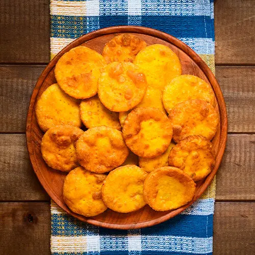
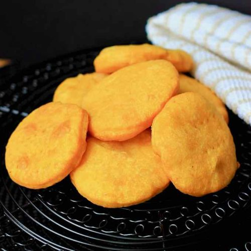

I
N
G
R
E
D
I
E
N
T
E
S
- 2 Tazas de harina sin polvos de hornear.
- 1 Taza de zapallo molido.
- 2 Cucharadas de manteca.
- ½ Cucharada de sal.
- Aceite para freir.
- Tiempo estimado: 90 minutos.
- Dificultad: Media.
- Unidades aprox: 15 unidades.
PROCEDIMIENTO
Paso 1:
En un bol mezcla todos los ingredientes hasta tener una masa suave y homogénea.
Paso 2:
Espolvorea un poco de harina sobre el mesón y estira la masa con ayuda de un uslero.
Paso 3:
Cuando haya alcanzado los 3mm de grosor aprox. corta las sopaipillas en una forma circular de 6cm aproximadamente y pinchalas en el centro con un tenedor.
Paso 4:
Caliente el aceite en una sartén y fría las sopaipillas por alrededor de 3 minutos cada una, Seguido de esto retirelas con una espumadera y déjelas reposar sobre una fuente con papel absorbente.
¿Problemas con la visualización del video?
Veelo a través de YouTube.